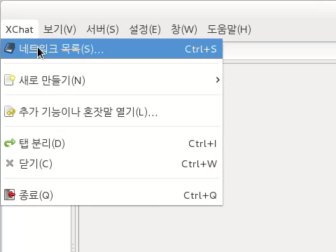
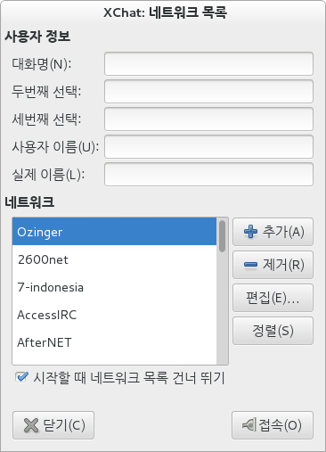
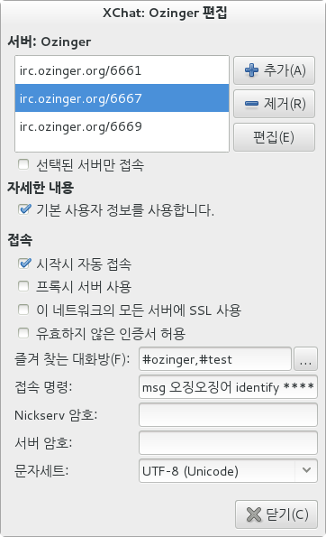

XChat
XChat은 Gtk+ 2 기반의 무료 오픈 소스 GUI IRC 클라이언트입니다.
설치
많은 리눅스 배포판에서 쉽게 xchat을 설치할 수 있습니다.
- Fedora: 소프트웨어에서 XChat 설치 또는 터미널에서 "yum install xchat"
- Ubuntu: Ubuntu 소프트웨어 센터에서 XChat 설치 또는 터미널에서 "apt-get install xchat"
- Gentoo: emerge xchat (라이브러리 설치에 관해서는 젠투 포럼을 참조)
- Arch Linux: pacman -Sy xchat
설정
XChat에 오징어 서버를 설정하는 방법은 다음과 같습니다.
- 네트워크 목록을 엽니다. XChat을 처음 실행하거나 창에서 XChat > 네트워크 목록을 선택해 열 수 있습니다.
 - 대화명과 이름을 입력합니다. 대화명 2, 3은 위쪽 대화명이 사용 중일 때 쓰일 후보들입니다. 이름은 꼭 실제 이름일 필요는 없습니다. 추가 버튼을 눌러 서버를 추가합니다.
 - 추가한 서버를 편집합니다. 서버 목록의 서버 중 적어도 하나를 추가합니다. 프로그램 시작 시에 자동으로 접속할지, 별도의 닉네임과 이름을 사용할지 선택할 수 있습니다. 즐겨 찾는 채널들 이름은 쉼표(,)로 구분됩니다. 관리 봇에 닉네임을 등록한 경우 인증 명령어를 등록하면 좋습니다.

플러그인
XChat은 파이썬, 펄, TCL 기반의 플러그인들을 지원합니다. XChat 포럼에서 플러그인을 비롯한 정보를 찾아 볼 수 있습니다.
XChat for Windows
XChat for Windows는 윈도우 용 XChat입니다. 리눅스 용은 무료이지만, 윈도우 용은 30일 동안만 무료로 사용할 수 있습니다. 윈도우 용 무료 클라이언트를 찾는다면 XChat의 변종인 HexChat을 사용해 보세요.